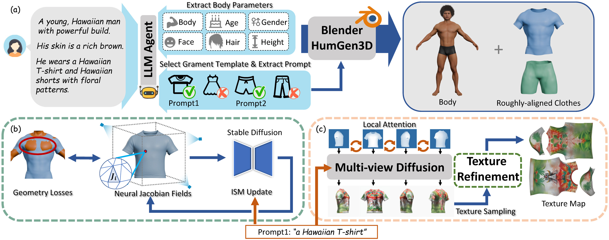

Creating detailed 3D human avatars with garments typically requires specialized expertise and labor-intensive processes. Although recent advances in generative AI have enabled text-to-3D human/clothing generation, current methods fall short in offering accessible, integrated pipelines for producing ready-to-use clothed avatars. To solve this, we introduce Tailor, an integrated text-to-avatar system that generates high-fidelity, customizable 3D humans with simulation-ready garments. Our system includes a three-stage pipeline. We first employ a large language model to interpret textual descriptions into parameterized body shapes and semantically matched garment templates. Next, we develop topology-preserving deformation with novel geometric losses to adapt garments precisely to body geometries. Furthermore, an enhanced texture diffusion module with a symmetric local attention mechanism ensures both view consistency and photorealistic details. Quantitative and qualitative evaluations demonstrate that Tailor outperforms existing SoTA methods in terms of fidelity, usability, and diversity. Code will be available for academic use.
